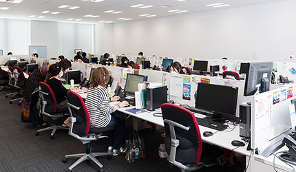
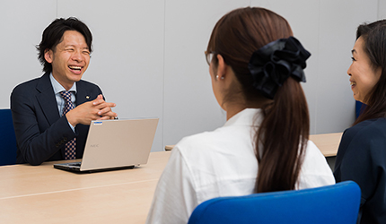
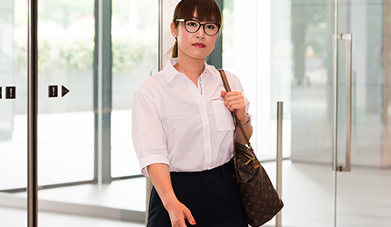
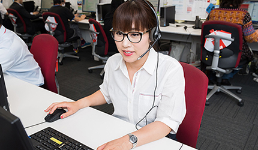
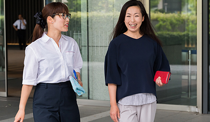

チーフスーパーバイザー
佐藤
2015年入社
東日本オペーレーション事業部
仙台の地でオペレーレーター部署をまとめるスーパーバイザー（SV）として活躍の日々。お客様の声をクライアントに繫ぐ役割はコミュニケーション力が重要！ 社交的な性格でクライアントのニーズに迅速に対応する中、スタッフの良き相談相手として働きやすい環境作りにも力を入れる。アクティブにプライベートも満喫しながら、「感動共有企業」の一員として、より良いサービスの向上に全力投球。
- 出社
- シフトによって多少前後します。ビジネス街でひときわ目立つ仙台トラストタワー。毎朝やる気が湧いてきます。

- スタッフの笑顔チェック・事務仕事
- センター全体を見渡し、スタッフひとりひとりに声をかけ、元気と笑顔をチェックします。その後お昼までは事務仕事。メールのチェックなど。

- ランチタイム
- ビル内だけでなく周辺にも飲食店がたくさん。上司や同僚とランチに出かけることも。最近は近所の蕎麦屋さんが好き。
- クライアントと会議
- テレビ会議で定期的に情報共有や改善点などを話し合います。SVとして的確に要望を聞き取ることが大切です。
- 仙台拠点会議
- 社内会議はスタッフと行う小規模のものから、SV同士の会議などがあります。今日は各拠点のSVが集う全体会議。
- 休憩
- 休憩ルームのマッサージチェアがお気に入り。仮眠ルームやテレビもあり、スタッフそれぞれ自由に過ごしています。
- 事務仕事・声かけ
- メール対応などの他、オペレーターに声かけ。どんなことも気軽に相談してもらえるようにコミュニケーション重視！

- 報告などの資料作成
- 本日までの結果など、クライアントへの報告資料をまとめます。また、明日の担当者への引き継ぎ書も作成します。
- 退社
- お疲れ様でした！たまに同僚と一杯飲みながらいろいろな会話をするのも楽しみのひとつです。
オペレーター
舟山
2099年入社
東日本オペーレーション事業部
子育てと仕事を両立しながら周りにも頼られるママさんオペレーター。 現在は家電ブランドの問い合わせに対応するフロアで、日々お客様の困った！に真摯に対応。 相手に安心感を与える笑声（笑顔と声）で電話先のお客様はもちろん、実はフロアスタッフにもファンが多い。現在は子供もまだ小さいので時短勤務だが、子供の成長に合わせてSV職へのステップアップも目標として 日々取り組んでいる。
- 出社
- 子供と一緒に朝ごはんを食べてから小学校に送り出して出勤です。

- お仕事開始
- 「洗濯機が動かなくて困ったわ」そんな困ったを丁寧に解決していきます。

- ランチタイム
- 会社のママ友とたまには外でランチ。仕事もがんばるママだから、わかりあえることも。

- 午後のお仕事開始
- お昼を食べてパワーをつけたところで、新人さんたちのフォローに入ります。皆、お客様のために一生懸命です！
- お仕事終了
- そろそろ帰り支度です。抱えている仕事があると同僚たちが率先して協力をしてくれます。
- 自宅に到着
- 子供と一緒に夜ご飯のお買物。家族のためにもうひと仕事！